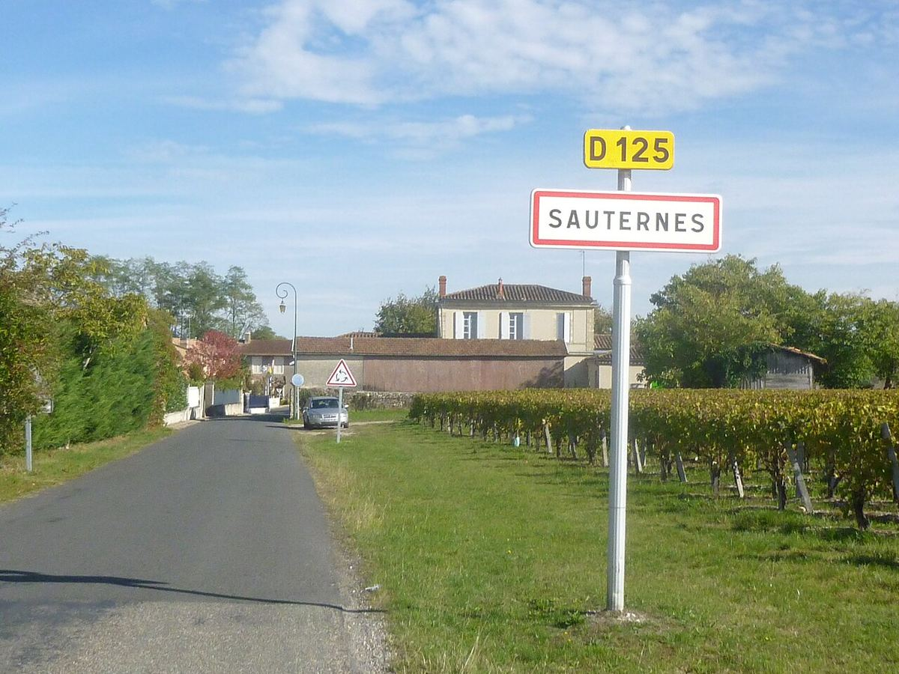

DULCE
Sauternes, al sur de Graves, es la denominación de los grandes vinos dulces de Burdeos, elaborados con uvas afectadas por la podredumbre noble. Su vino más conocido, Château d'Yquem, fue el único clasificado como premier cru supérieur en 1855.

La denominación Sauternes comprende cinco municipios situados en la orilla izquierda del Garona, unos cuarenta kilómetros al sureste de la ciudad de Burdeos: Sauternes, Bommes, Fargues, Preignac y Barsac. Los vinos de Barsac pueden comercializarse con la denominación propia de este municipio o como Sauternes. En la orilla opuesta del Garona se encuentran otras denominaciones de vinos dulces, como Loupiac, Cadillac y Sainte-Croix-du-Mont, y junto a Barsac se sitúa Cérons.
La singularidad de Sauternes procede de su microclima. El pequeño río Ciron, de aguas frías por atravesar el bosque de las Landas, desemboca aquí en el Garona, más templado. En otoño, este contraste favorece la formación de nieblas matinales que, seguidas de tardes soleadas y secas, crean las condiciones idóneas para el desarrollo de Botrytis cinerea en su forma benéfica, la llamada podredumbre noble. El hongo perfora la piel de la uva, que pierde agua y concentra azúcares, ácidos y aromas, al tiempo que adquiere notas características.
El proceso no se produce de manera uniforme, ni todos los años con la misma intensidad. Por ello la vendimia se hace a mano y en varias pasadas sucesivas por la viña, llamadas tries, en las que se seleccionan sólo los racimos o granos en el estado adecuado. Los rendimientos son muy bajos y en algunas añadas desfavorables ciertas propiedades renuncian a elaborar su vino principal.
Los suelos alternan gravas, arenas y arcillas sobre subsuelos calizos o arcillosos; en Barsac, los terrenos son más llanos y la caliza aparece cerca de la superficie bajo una delgada capa de arena y arcilla rojizas.
Además de los tintos, la clasificación de 1855 incluyó los vinos blancos dulces de Sauternes y Barsac. Château d'Yquem recibió la categoría única de premier cru supérieur, y las demás propiedades se repartieron entre premiers crus y deuxièmes crus. Entre los primeros figuran, por ejemplo, Château Climens y Château Coutet, en Barsac, y Château Suduiraut y Château Rieussec.
La Sémillon es la variedad principal, por su piel fina y su receptividad a la botritis; la acompañan la Sauvignon Blanc, que aporta frescura, y en pequeña proporción la Muscadelle. Los vinos, generalmente fermentados y criados en barrica, son dulces, untuosos y equilibrados por la acidez, con aromas de albaricoque, cítricos confitados, miel y especias. Pueden envejecer durante décadas. Los blancos secos elaborados en la zona se comercializan con la denominación Bordeaux.